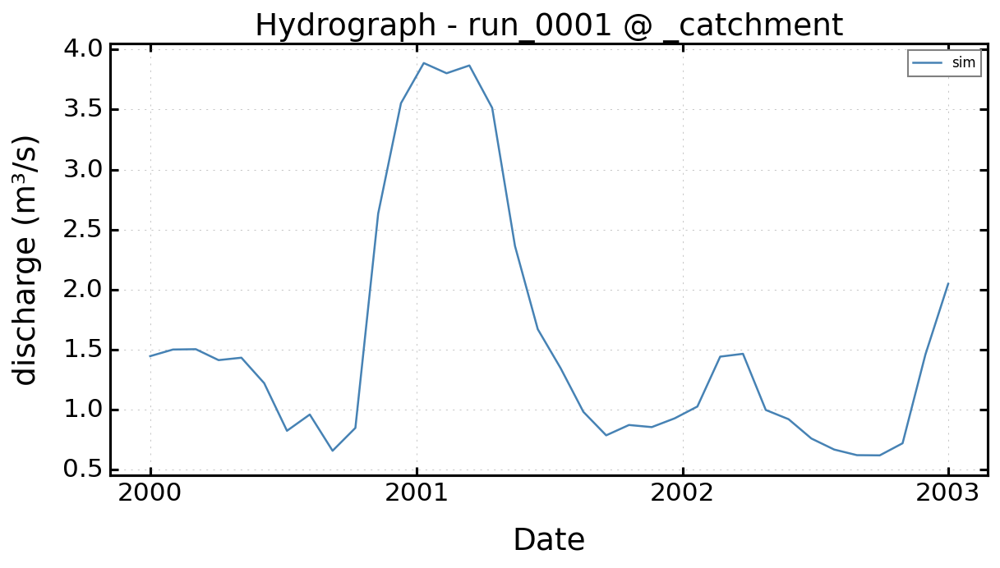

Recharge And Surface-Exchange Semantics#
Purpose#
This page explains the physical meaning of the main hydrological quantities that sit upstream of the groundwater solve:
recharge,
evapotranspiration,
runoff,
and surface-related exchange concepts such as stream, ocean, and drainage.
It complements Hydrological Forcing Chain.
The distinction is deliberate:
Hydrological Forcing Chain describes the software and data path,
this page describes the scientific meaning of the quantities carried by that path.
For a deeper treatment of boundary-like surface exchanges, see Stream, Ocean, And Drainage Semantics.
Runtime Data-To-Flow Diagram#
External datasets (recharge, ETP, runoff, hydrography, oceanic) are
turned into LoadResult payloads by the data managers. From there:
recharge, ETP, and stage-capable inputs are passed through structure binders that build the recharge, ETP, or boundary payloads,
the binders hand the diffuse forcing to
forcing_bridge.resolve_forcing(), which aligns the spatial mode, the time axis, and the units (mm/daytom/s, or stage inm),the normalized forcing is plugged into
FlowRechargeConfig,FlowEtpConfig, and the boundary mappings,the resulting
Flowruntime is then forwarded to the solver adapters (MODFLOW-NWT, MODFLOW 6, Boussinesq).
Runoff is not routed through the Flow contract: it stays an observation-side input that calibration and comparison consume directly. Simulated heads, drainage, and baseflow from the Flow runtime are combined with that runoff at evaluation time, where runoff may be added to the DRN/baseflow signal.
Diffuse forcing and boundary support share one Flow contract, but they are not the same physical category.
This diagram highlights a central distinction in the current design:
diffuse hydrological forcing is normalized into the Flow contract, while
runoff mainly remains an observation-side quantity for comparison and
calibration.
Result anchors#
The semantic distinction becomes easier to keep straight when the reader sees where each quantity appears in a result. The Nancon run is the practical anchor; the analytical validation cases remain the precise mathematical anchors listed near the end of the page.



Result anchors#
The semantic distinction becomes easier to keep straight when the reader sees where each quantity appears in a result. The Nancon run is the practical anchor; the analytical validation cases remain the precise mathematical anchors listed near the end of the page.
Hydrological Quantities#
HydroModPy already manipulates several water-related variables that belong to different conceptual levels.
Quantity |
Typical units |
Main physical meaning |
Current role in HydroModPy |
|---|---|---|---|
Precipitation |
|
Atmospheric input at land surface |
Upstream climatic driver, not a direct |
Recharge |
|
Effective vertical gain to the aquifer |
Direct groundwater forcing or hydrology-derived forcing |
ETP |
|
Atmospheric water-demand or extraction proxy |
Diffuse sink term when explicitly bound to |
Runoff |
|
Surface runoff component |
Observation-side or comparison-side quantity, not a direct groundwater solver forcing today |
Stream or ocean stage |
|
Boundary water level |
Boundary-condition input, not recharge |
Drainage |
conductance |
Head-dependent release from the aquifer |
Boundary or exchange operator, not climatic forcing |
Two Main Scientific Paths To Recharge#
HydroModPy currently supports two broad ways to define recharge.
Direct groundwater forcing#
Recharge can be supplied directly as a groundwater-model forcing through:
[data.recharge]and the data-manager layer,[flow.sinks_sources.recharge]in explicit project configuration,or synthetic recharge series used in examples, comparisons, and validation.
Scientifically, this means the modeller accepts recharge as an already derived quantity. The land-surface balance has happened elsewhere, or is intentionally abstracted away.
Hydrological preprocessing#
Recharge can also be produced by an upstream hydrological treatment, notably through the PyHELP-related tooling and associated forcing pipelines.
Scientifically, this means HydroModPy receives a land-surface interpretation before the groundwater solve:
climatic inputs are transformed,
recharge becomes one derived effective aquifer input,
runoff and evapotranspiration may also be produced as companion outputs.
From the groundwater solver point of view, both paths converge to the same
canonical quantity: a recharge forcing eventually normalized into
FlowRechargeConfig.
Units And Normalization#
The repository already follows a useful unit policy, even if it was not yet written in one scientific page.
Data-layer conventions#
At data-manager level, the internal conventions are currently:
recharge:
mm/day,ETP:
mm/day,runoff:
mm/day.
This convention is explicit in the variable-manager layer and in the generic forcing bridge.
Runtime Flow conventions#
Once bound to the Flow runtime, the main groundwater quantities are
normalized to solver-facing SI units:
recharge:
m/s,ETP:
m/s,well rates:
m3/s,head or stage values:
m.
This is one of the important scientific simplifications in the codebase: backend adapters receive normalized process quantities rather than having to interpret many source units themselves.
Runoff is handled differently#
Runoff does not currently enter the Flow process as a groundwater forcing.
Instead, it remains a loaded hydrological quantity that can be reused later for
comparison or calibration.
In calibration, the current logic can add runoff to the simulated groundwater release signal to compare against total observed streamflow at outlet scale.
Spatial Semantics#
The generic forcing bridge already distinguishes three spatial modes:
auto,homogeneous,heterogeneous.
auto#
In auto mode, the current policy is:
point records are reduced to one homogeneous time series,
field records are kept as heterogeneous forcing sources,
located points can also become heterogeneous if no usable homogeneous series is available.
This is a pragmatic modelling default:
station-style forcings naturally become basin-average signals,
gridded products naturally remain spatially distributed.
homogeneous#
In homogeneous mode, HydroModPy forces a spatially averaged
interpretation:
multiple point stations are averaged,
gridded fields can be reduced to one spatial mean per time step.
This is scientifically useful when the purpose is:
a reduced-order benchmark,
an inter-solver comparison on one common lumped forcing,
or a first exploratory run before introducing heterogeneity.
heterogeneous#
In heterogeneous mode, the loaded forcing is preserved for later
discretization onto the solver mesh.
The important point is that the data layer does not discretize it immediately. It stores one source that is later projected or interpolated to the actual solver mesh once that mesh exists.
Current interpolation keywords are:
nearest,linear,idw.
Temporal Semantics#
HydroModPy also separates two temporal questions that are often mixed in groundwater documentation.
For the exact public contract on stress-period aggregation and the historical
first_clim convention, see
Forcing Time Aggregation And First_Clim.
Stress-period alignment#
The generic forcing bridge aligns time series to the simulation window using the following current rule:
one output value per stress period,
arithmetic mean of all values inside the interval
[period_start, period_end),if no sample falls inside the interval, reuse the latest value available before period end.
This policy is simple, explicit, and uniform across climatic variables.
first_clim policy#
Recharge and ETP runtime configs also retain a first_clim policy. Its role
is to control how the first solver period is represented when the backend later
consumes a scalar or sequence payload.
Current accepted values are:
"mean","first",or one explicit numeric value.
Scientifically, this is most useful for warm-up or representative-initial-period setups. It should not be confused with the general stress-period alignment itself.
Sign Semantics And Current Policies#
Recharge#
Positive recharge means water added to the aquifer.
This is the canonical interpretation at Flow level, regardless of whether
the recharge came from:
a direct recharge dataset,
a synthetic series,
or an upstream hydrological preprocessing step.
Dedicated ETP#
When ETP is explicitly bound to Flow, it is treated as a diffuse
extraction term. Positive values therefore mean water removed from the
groundwater system.
Negative Recharge Routed To EVT#
The current codebase supports one pragmatic policy:
negative recharge values can be clipped out of recharge,
and their magnitude can be rerouted to an
EVT-style sink throughnegative_to_evt.
This is useful, but it should be described honestly:
it is a net-loss policy,
it is not a full land-surface energy-balance model,
it is not the same thing as documenting one independent physical theory of evapotranspiration.
Runoff#
Runoff is not currently injected into the groundwater solver as a source or sink term.
Its main current roles are:
loaded hydrological information,
hydrometric comparison support,
calibration-side complement to groundwater discharge or drainage release.
That distinction matters a lot for interpretation:
recharge changes aquifer mass directly,
runoff currently changes mainly the observation-side interpretation of outlet flow comparisons.
What Counts As Surface Exchange#
The repository mixes several notions that all involve the ground surface or a surface interface, but they should remain conceptually distinct.
Climatic or hydrological forcing#
recharge,
ETP,
upstream precipitation-derived products.
These are imposed forcing quantities that enter the model because they are interpreted as externally supplied water gains or losses.
Boundary or exchange operators#
stream,
ocean,
drainage.
These do not primarily represent climatic forcing. They represent exchange laws or boundary states linking the aquifer to one external compartment.
Observation-side hydrological signals#
runoff,
hydrometry.
These are usually used to evaluate the simulation, not to define the internal groundwater equation directly.
Solver-Specific Surface Closures#
The Boussinesq backend also contains solver-side surface-interaction closures such as regularized saturation excess.
Those closures should not be conflated with:
direct runoff observations,
the drainage boundary operator,
or the generic recharge forcing.
Current Code Path At A Glance#
The current public path can be summarized as:
external climatic or recharge data
-> data manager LoadResult
-> forcing_bridge.resolve_forcing()
-> FlowRechargeConfig / FlowEtpConfig
-> Flow runtime
-> solver adapter
-> recharge, EVT, or related package/operator payloads
The runoff path is different:
external runoff data
-> loaded_data.runoff
-> calibration / comparison logic
-> optional combination with simulated groundwater-release signal
Validation And Comparison Anchors#
Useful pages already exist to anchor the main meanings described here.
Steady uniform recharge: Dupuit Uniform Recharge 1D
Transient recharge step: Linearized Unconfined 1D Recharge Step
Periodic recharge forcing: Linearized Unconfined 1D Periodic Recharge
Recharge plus emergent drainage across code families: Surface-Interaction Ramp Code Comparison
Stream, ocean, and drainage semantics in more detail: Stream, Ocean, And Drainage Semantics
Why This Page Matters#
Without this semantic split, several misleading readings become almost inevitable:
treating runoff as if it were already recharge,
treating negative recharge as if it were a full ETP theory,
treating stream or ocean stage as if it were climatic forcing,
treating drainage as if it were only a postprocessing signal.
The scientific documentation needs those distinctions if it wants to explain why two HydroModPy runs may use the same groundwater solver but represent very different hydrological assumptions upstream.
Current Source Anchors#
hydromodpy.physics.flow.structure_bindershydromodpy.physics.forcing.forcing_bridgehydromodpy.physics.forcing.time_alignmenthydromodpy.physics.flow.sinks_sourceshydromodpy.data.variables.rechargehydromodpy.data.variables.etphydromodpy.data.variables.runoffhydromodpy.calibration.metrics